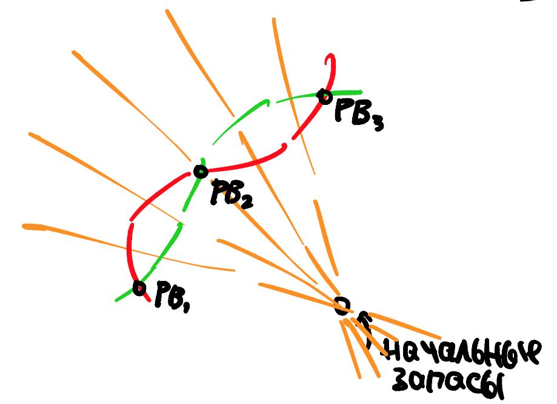

Двенадцатая лекция, часть 2
Contents
Двенадцатая лекция, часть 2¶
В этой части лекции мы поговорим об существовании равновесия Вальраса, а также об интересном объекте, возникающем в процессе доказательства существования.
Избыточный спрос¶
Definition 66
Избыточным спросом в экономике обмена/с производством/ЭД называется вектор \(\vec E(p)\), представляющий собой:
где \(\vec x, \vec y\) – это оптимальные потребления и производства в соответствующем смысле.
Практически очевидным является свойство, что избыточный спрос гомогенен, то есть, \(E(\lambda p) = E(p)\). Если все цены умножить на сто, то произойдет инфляция, но реальная экономика не изменится.
Поэтому, избыточный спрос, как правило, определен на симплексе цен - пространство цен после нормировки. Только нормировать я буду не как обычно (последняя цена к единице), а так, чтобы сумма цен равнялась единице. Это, по сути, все цены кроме \(\vec p = \vec 0\).
Definition 67
Симплексом цен называется пространство цен \(\Delta\) такое, что
Также любопытно, что закон Вальраса можно лаконично записать как $\(\text{Закон Вальраса:} \quad \vec p \cdot \vec E(p) = 0\)$
Как искать равновесие, ч.1¶
Про Равновесие Вальраса можно думать по-разному, например:
РВ решает систему нелинейных уравнений
Но неочевидно, что у этой нелинейной системы вообще есть решение и решить такое очень трудно, даже на компьютере.
Можно попробовать по-другому:
РВ ищет минимум гладкой функции потерь
РВ ищет минимум негладкой функции потерь
Ничего не мешает, к примеру, запустить оптимизацию гладкой функции \(Loss(p)\), но только неочевидно, что она будет выпуклая.
Как искать равновесие, ч.2¶
Предлагается следующая динамика цен на симплексе.
инициализируем точку \(\vec p_0\) во внутренности \(\Delta\)
пусть мы находимся в точке \(\vec p_{i}\)
меняем цены по следующему алгоритму $\( \tilde p_{k, i+1} := \vec p_{k, i} + \gamma \cdot \max(0, E_k(\vec p)), \quad \gamma >0\)$
и возвращаем их на симплекс $\( \vec p_{k, i+1} := \frac{\tilde p_{k, i+1}}{\sum_{k \in K} \tilde p_{k, i+1}}.\)$
Это почти как градиентный спуск, но не совсем.

Утверждается, что такая динамика имеет фиксированную точку (зачастую, единственную), которая и будет равновесием Вальраса.
Существование РВ¶
Нас интересует фиксированная точка следующего отображения:
которое действует из симплекса \(\Delta\) в себя (легко проверить).
Theorem 14 (Теорема Брауэра)
Непрерывное отображение компактного выпуклого множества на себя имеет хотя бы одну неподвижную точку.
значит, найдется цена такая, что
или
умножим все на \(E_k(\vec p)\)…
и сложим
левая часть обнулится по закону Вальраса (\(p E(p) = 0\)), получается
Осталось вспомнить, какие условия необходимы для непрерывности спросов и выполнения Закона Вальраса.
Непрерывность, выпуклость и локальная ненасыщаемость предпочтений.
Мы практически доказали следующую теорему:
Theorem 15 (Существование РВ)
Пусть избыточный спрос непрерывен, тогда существует (хотя бы одно) равновесие Вальраса.
Была упущена лишь одна деталь: отображение должно действовать из всего компакта \(\Delta\), а у нас границе \(\Delta\) бесконечные избыточные спросы.
Это легко исправляется переопределением избыточного спроса так, чтобы он никогда не превышал максимальное число товара в экономике (с учетом производства). Тогда, даже стартуя из нулевых цен, мы не “врежемся” в бесконечность.
Единственность равновесия¶
Единственности равновесия Вальраса, вообще говоря, нет. Несложно придумать пример с двумя товарами и двумя агентами, где меня отношение цен \(p/q\), мы можем пересечь спросы агентов в, скажем, трех точках.
{kind=link}
Однако есть не очень сильные предположения, при которых ее можно все-таки доказать, см. например http://econdse.org/wp-content/uploads/2018/10/Lecture-8.pdf, так как в учебнике БЖЦ эта тема не обсуждается.
Definition 68
Избыточный спрос обладает свойством валовых субститутов (gross substitutes), если для любых двух векторов \(\vec p, \tilde p > 0\) таких, что \(\vec p \geqslant \tilde p\) и \(\vec p \neq \tilde p\), то
другими словами, избыточный спрос строго возрастает по ценам других товаров при фиксированной собственной цене.
Легко видеть, что избыточный спрос обладает свойством валовых субститутов, если предпочтения каждого агента обладают свойством валовых субститутов. Например, из того, что у матрицы Слуцкого вне диагонали стоят положительные числа, и все товары нормальные, то предпочтения именно такие.
Theorem 16 (Единственность РВ)
Пусть избыточный спрос обладает свойством валовых субститутов, тогда равновесие Вальраса (если оно вообще существует) единственно.
Доказательство
Предположим, от обратного, что есть два вектора цен \(\vec p \neq \tilde p\), и вокруг каждого из них можно построить равновесие.
Рассмотрим число \(\lambda\) такое, что:
тогда
тогда \(\vec p\) и \(\lambda \tilde p\) удовлетворяют посылке свойства валовых субститутов, а следовательно
С другой стороны, в равновесии избыточный спрос нулевой, и, вспоминая про гомогенность спроса, получается, что \(0>0\), противоречие.